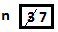

2.4. Variables and Assignment¶
Each piece of data in a C# program has a type. Several types have been introduced:
int for integers, double for numbers allowing a fractional part,
approximating more general real numbers.
There are many other numeric types and also non-numeric types, but we can use int
and double for examples now. Data gets stored in computer memory. Specific
locations in memory are associated with the type of data stored there
and with a name to refer to it.
A program allocates a named storage spot for a particular type of data with a declaration statement, like:
int width;
Each declaration must specify a type for the data to be stored and give a name to refer to it. These names associated with a data storage location are called variables.
The declaration statement above sets aside a location to store an int, and names
the location width. Several variables of the same type can be
listed together, like:
double x, y, z;
identifying three storage locations for variables of type double.
To be useful, data needs to be stored in these locations. This is done with an assignment statement. For example:
width = 5;
A simple schematic diagram with a name for a location in memory (the box):

Although we are used to reading left to right, an assignment statement works right to left. The value on the right side of the equal sign is calculated and then placed in the memory location associated with the variable on the left side of the equal sign, either giving an initial value or overwriting any previous value stored there.

Variables can also be initialized as they are declared:
int width = 5;
double x = 12.5, y = 27, z = 0.5;
or initializations and plain declarations can be mixed:
int width = 5, height, area;
height = 7;
Stylistically the example above is inconsistent, but it illustrates what is possible. Technically an initialization is not an assignment. We will see some syntax that is legal in initializers, but not in assignment statements.
We could continue with a further assignment statement:
area = width * height;
Look at this in detail. The assignment statement starts by evaluating the
expression on the right-hand side: width * height. When variables are
used in an expression, their current values are substituted,
like in evaluating an expression in math, so the value is the same as
5 * 7
which finally evaluates to 35. In the last step of the assignment statement,
the value 35 is then assigned to the variable on the left, area.
Warning
You want one spot in memory prepared for each variable. This happens with declaration, not assignment: Assignment just changes the value at the current location. Do not declare the same variable more than once. You will get an error. More on the fine points around that in Local Scope.
We continue introducing Csharp: Remember that in csharp you can just give an expression, and csharp responds with a value. That syntax and reaction is special to csharp. In csharp you can also test regular C# statements, like declarations and assignments. The most recent versions of csharp do not require you to end a statement with a semicolon, though we tend to put semicolons after statements in our illustrations (and no semicolon for just an expression). As in a regular program, statements do not give an immediate visible response in csharp. Still in csharp you can display a variable value easily:
csharp> int width = 5, height, area;
csharp> height = 7;
csharp> area = width * height;
csharp> area
35
In the last line, area is an expression, and csharp will give back its value,
which is just the current value of the variable.
At this point you should be able to make sense of some more features of csharp. You can start with the csharp special help command:
csharp> help
"Static methods:
Describe (object) - Describes the object's type
LoadPackage (package); - Loads the given Package (like -pkg:FILE)
LoadAssembly (assembly) - Loads the given assembly (like -r:ASSEMBLY)
ShowVars (); - Shows defined local variables.
ShowUsing (); - Show active using declarations.
Prompt - The prompt used by the C# shell
ContinuationPrompt - The prompt for partial input
Time(() -> { }) - Times the specified code
print (obj) - Shorthand for Console.WriteLine
quit; - You'll never believe it - this quits the repl!
help; - This help text
TabAtStartCompletes - Whether tab will complete even on empty lines
A lot of this is still beyond us but these parts are useful:
ShowVars (); - Shows defined local variables.
quit; - You'll never believe it - this quits the repl!
help; - This help text
We can continue the csharp session above and illustrate ShowVars():
csharp> ShowVars();
int width = 5
int height = 7
int area = 35
displaying all the variables currently known to csharp, plus their current values.
We refer to “current values”. An important distinction between variables in math and variables in C# is that C# values can change. Follow this csharp sequence:
csharp> int n = 3;
csharp> n
3
csharp> n = 7;
csharp> n
7
showing we can change the value of a variable. The most recent assignment is remembered (until the next assignment....) We can imagine a schematic diagram:
{kind=link}
We can carry this csharp session one step further, illustrating a difference between C# and math:
csharp> n = n + 1;
csharp> n
8
Clearly n = n + 1 is not a true mathematical equation: It is a C# assignment,
executing with a
specific sequence of steps.
- First the right hand side expression
is evaluated,
n + 1. - This involves looking up the current value of
n, which we set to 7, so the expression is the same as7 + 1which is 8. - After this evaluation, an assignment is made to the left hand variable,
which happens to be
nagain. - Then the new value of
nis 8, replacing the old 7.
There are many occasions in which such an operation will be useful.
Assignment syntax does have two strikes against it:
- It appropriates math’s equal sign to mean something quite different.
- The right to left operation is counter to the English reading direction.
Still this usage is common to many programming languages.
Warning
Remember in an assignment that the sides of the equal sign have totally different meanings. You assign to a variable on the left side after evaluating the expression on the right.
We can illustrate a likely mistake in csharp:
csharp> 3 = n;
{interactive}(1,2): error CS0131: The left-hand side of an assignment
must be a variable, a property or an indexer
Students commonly try to assign left to right. At least in this case you get an error message so you see a mistake. If you mean to assign the value of x to y, and write:
x = y;
you get the opposite effect, changing x rather than y, with no error statement. Be careful!
There is some weirdness in csharp because it adds special syntax for expressions which does not appear in regular programs, but it also wants to allow syntax of regular programs. Some conflict can occur when trying to display an expression, sometimes leading to csharp giving a strange error for apparently no reason. In that case, try putting parentheses around the expression, which is always legal for an expression, but would never start a regular statement:
csharp> int width = 3;
csharp> int height = 5;
csharp> width * height
{interactive}(1,2): error CS0246: The type or namespace name 'width' could
not be found. Are you missing a using directive or an assembly reference?
csharp> (width * height)
15
2.4.1. Literals and Identifiers¶
Expressions like 27 or 32.5 or "hello" are called literals,
coming from the fact that they literally mean exactly what they
say. They are distinguished from variables, whose value the compiler cannot infer
directly from the name alone.
The sequence of characters used to form a variable name (and names for other C# entities later) is called an identifier. It identifies a C# variable or other entity.
There are some restrictions on the character sequence that make up an identifier:
- The characters must all be letters, digits, or underscores
_, and must start with a letter. In particular, punctuation and blanks are not allowed. - There are some words that are keywords for special use in C#. You may not use these words as your own identifiers. They are easy to recognize in editors like in Xamarin Studio, that know about C# syntax: They are colored differently.
We will only discuss a small fraction of the keywords in this course, but the curious may look at the full list.
C# is case sensitive: The identifiers last, LAST, and
LaSt are all different. Be sure to be consistent. The compiler
can usually catch these errors, since it is the version used in the one
declaration that matters.
What is legal is distinct from what is conventional or good
practice or recommended. Meaningful names for variables are
important for the humans who are looking at programs, understanding
them, and revising them. That sometimes means you would like to use
a name that is more than one word long, like price at opening,
but blanks are illegal! One poor option is just leaving out the
blanks, like priceatopening. Then it may be hard to figure out
where words split. Two practical options are
- underscore separated: putting underscores (which are legal) in
place of the blanks, like
price_at_opening. - using camel-case: omitting spaces and using all lowercase,
except capitalizing all words after the first, like
priceAtOpening
Use the choice that fits your taste (or the taste or convention of the people you are working with). We will tend to use camel-case for variable inside programs, while we use underscores in program file names (since different operating systems deal with case differently).
2.4.1.1. Assignment Exercise¶
Think what the result would be in csharp:
int x = 1;
x = x + 1;
x = x * 3;
x = x * 5;
x
Write your prediction. Then test. Can you explain it if you got it wrong?
2.4.1.2. Another Assignment Exercise¶
If you had trouble with the last, one try this one, too:
int a = 5;
a = a/2;
a = a + 1;
a = a * 2;
a